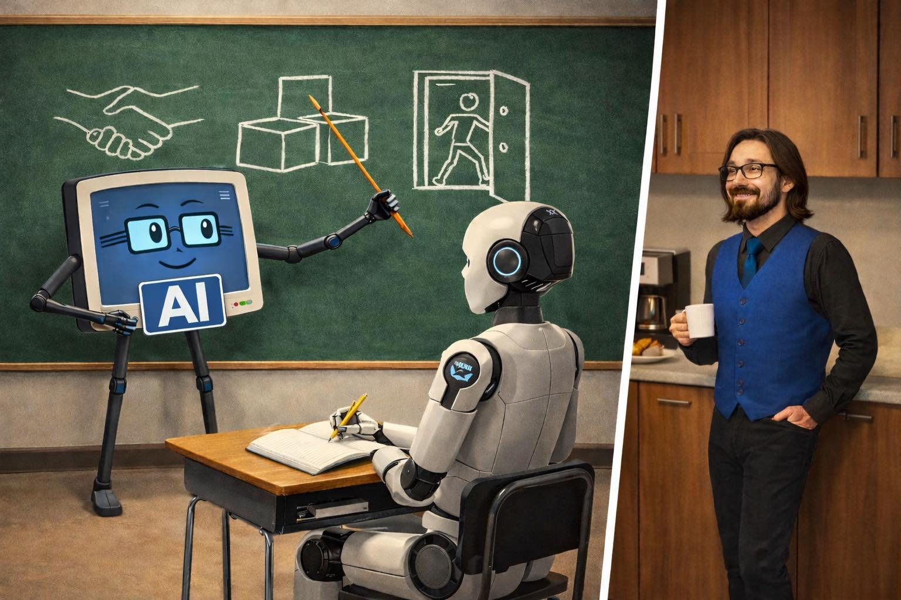

In the realm of robotics, not every significant advancement comes adorned with spectacle. Recently, a notable shift has emerged, one that quietly redefines how humanoid robots learn and adapt in their environments.
Amidst the buzz of flashy demonstrations and high-profile showcases, a subtle yet profound evolution is taking place in robotics. The company 1X has begun leveraging artificial intelligence to train its humanoid robots, a development that, while not drenched in theatrics, signals a pivotal change in the industry. This shift is essential to notice because it highlights a growing reliance on AI systems to bridge the gap between human instruction and robotic autonomy.
Traditionally, training robots has been a labor-intensive process, often requiring humans to meticulously demonstrate each task. However, the approach taken by 1X introduces a new dynamic: AI interprets video and simulated environments to learn how to perform tasks. Rather than waiting for human guidance at every step, these robots are now equipped to analyze their surroundings, predict outcomes, and adapt their behavior accordingly. This not only streamlines the training process but also allows for a more nuanced understanding of complex tasks that might be difficult to articulate in a straightforward manner.
As a result, the role of human trainers evolves. They remain critical in setting objectives and assessing outcomes, yet they no longer have to be the sole source of knowledge. The AI's involvement means that the learning process can scale; insights gained from one robot can be disseminated to others, leading to a collective growth in capabilities.
The implications of this technological shift are manifold. For one, it democratizes the training process, allowing the insights gained to be shared across multiple robots rather than confined to one-on-one instruction. This could potentially accelerate advancements in robotics, leading to quicker refinements and adaptations in diverse applications—from manufacturing to caregiving.
However, it is essential to approach this change with a balanced perspective. While the benefits are clear, there are limitations to consider. The reliance on AI for training introduces questions about the nuances of human intuition and creativity, elements that are often crucial in complex problem-solving scenarios. Moreover, there remains the challenge of ensuring that AI systems learn effectively and ethically, particularly in sensitive environments where human interaction is vital.
Looking ahead, the integration of AI in training robotics seems poised to become a standard practice rather than an exception. This evolution may lead us to a future where robots can adapt more fluidly to their tasks, learning from their experiences in real-time. Yet, it is crucial to remain vigilant about the implications of this shift. The path forward will likely require a thoughtful balance between human oversight and AI-driven autonomy, ensuring that our creations remain aligned with human values and ethical considerations.
Dr.WinMac explores the infrastructure and automation changes that affect everyone, explained without jargon.
Back to Blog